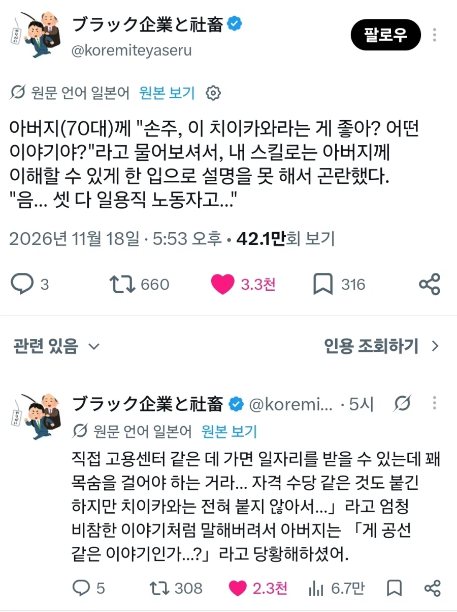

(게공선蟹工船은 원양어선에서 착취당하는 노동자가 나오는 프롤레타리아 문학이라고 함)

(게공선蟹工船은 원양어선에서 착취당하는 노동자가 나오는 프롤레타리아 문학이라고 함)
셋 다 일용직 노동자 (맞음)
직접 고용센터 가면 일자리 받을 수 있음 (맞음)
꽤 목숨을 걸어야함 (맞음)
자격 수당도 있긴 함 (맞음)
치이카와는 자격이 없어서 자격수당 없음 (맞음)

요즘,, 얼라들이,, 이런,, 것을 좋아 헌다,고,,?
기립하시오!!
그러니까 치이카와는 일용직 노동자 모에화란 말이지?
갑옷씨들이 지배계층이고 치이카와족들이 피지배계층이니까 그럴지도
심지어 치이카와족이 괴물에게 먹혀야 땅에서 음식이 나옴
노동자들의 피로 쓰여지는...어?
히러 히러
이봐, 지옥으로 가는 거야!
까딱하면 죽어나가는 것도 게공선이랑 같구만
이거 완전 러시아 문학이네

게잡이 공선ㅋㅋㅋㅋ
헉 아버님께서 일본의 그 시절 게공선을 알고 계시다고? 유명한 작품이긴 하지만 Hoxy...?
전공투…
일문학사 교과서에도 이름이 실려있는 소설인데 일본인이 모르면 그게 더 이상한 거
자본주의의 비인간적인부분을극도로 부풀려비평하는많화아니었나 취직을위해노력해서 따는자겨증같은건그냥 풀베기 자격증이나 다름없는쓸모없는것들뿐이라는 비판적인만화라고 생각함
치이카와노프스키의 초상
캐릭터 스킨 씌운 포스트아포칼립스 생존물이네 ㅋㅋㅋㅋㅋ
얼추 비슷함